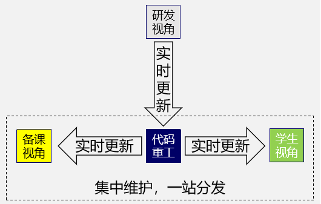
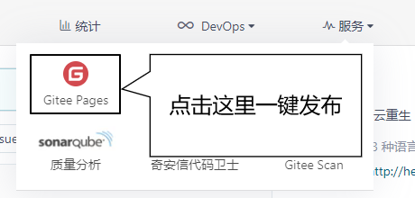
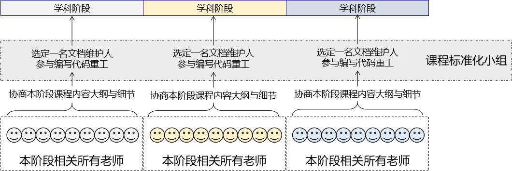

『代码重工』
一本『会生长』的『电子书』
| 亮点 | 说明 |
|---|---|
| 场景区分 | 传统课件：不区分场景，复习时需要从繁多内容中找到想要的关键信息。 代码重工：初学的时候看详细文档教程，复习的时候看简要笔记，宏观视角看脑图。 |
| 认知折叠 | 传统课件：所有内容在一个Word文档中，大量内容堆叠在一起 代码重工：将内容拆分成最小颗粒，再用超链接整合为完整内容。学习时更加专注 |
| 零距离 | 打开浏览器就可以直接看到，不需要下载任何文档。 |
| 图文并茂 | HTML文档天然支持图文混排。 |
| 自主学习 | 看视频学习：所有内容都被局限在一根进度条上 看文档学习：要看哪里自己决定 |
| 设备兼容 | 完美兼容PC端和移动端浏览器，无缝切换： 大块时间：用PC端浏览器视野开阔 碎片时间：用移动端浏览器分秒必争 |
| 收纳梳理 | 文件收纳：老师发给学生的资料经常会被淹没在凌乱的目录中找不到。 笔记梳理：很多同学不会做笔记，难以建立知识体系 现在代码重工成为你的云笔记，你只管去多敲多练 |
| 实时更新 | 内容更新后，用户端第一时间看到最新内容 |
| 亮点 | 说明 |
|---|---|
| 复制时间 | 一人备课，全家轻松，从此告别重复备课。 学生在微信上问讲过的问题，直接把代码重工的链接给他，一次备课终生受益。 在尽可能多的程度上能用产品代替人，让人有更多时间研发改进，告别低水平重复。 |
| 课件共享 | 任何老师备新课直接拿代码重工的文档来参考，不用问任何人要。 不需要登录百度网盘，不需要问别人要验证码，打开就有。 |
| 协同备课 | 代码重工底层是从Git到码云的版本控制体系，高效凝聚团队力量。 |
| 信息共享 | 再也不用问学生：你们讲过这个吗？ 前面老师讲过什么，看前面的文档即可。 |
| 课程标准 | 协同备课凝聚共识，共识确立标准，对外可以呈现课程内容的统一标准。 |
| 一站整合 | 课件内容无非是图文资料和其他较大文件。 图文资料：代码重工直接呈现 较大文件：在代码重工文档中挂百度网盘的共享链接即可。 |
| 实时更新 | 基于Git、码云版本控制体系，随时更新最新内容。 |
| 零费用 | Git、码云全部免费使用，没有任何成本负担。 |
| 持续积累 | 让我们付出的时间能够持续积累，形成指数型增长，带来复利效应。 站在前人的肩膀上才能走得更远。 毫不夸张的说，代码重工是尚硅谷在基础设施建设方面的重要探索。 |



唯一的问题：没有权限控制，所有内容对所有人可见，只要知道链接地址即可访问。